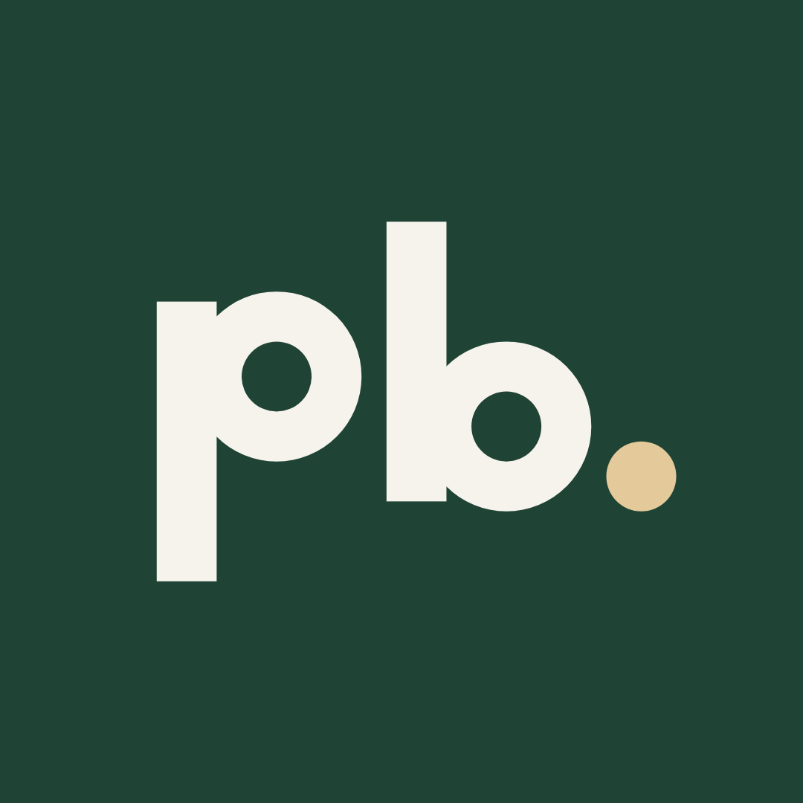

Zdjęcie profilowe

Logo (pb.)

Instagram przycina zdjęcie do koła, oba pliki są przygotowane tak, żeby nic ważnego nie wypadło. Dla usług projektowych częściej wybiera się logo, żeby spójnie wyglądało z grafikami, a zdjęcie przydaje się w bio lub w story „O mnie”.
Nazwa i bio
PBDesign | Strony i narzędzia
Nazwa pomaga w wyszukiwaniu, dlatego zawiera, czym się zajmujesz.
Strony internetowe, landing page i narzędzia online. Projektuję i koduję: od pomysłu po publikację. Przemysław Borkowski, PBDesign
Web designer i developer. Strony firmowe, landing page, narzędzia online. Projekty autorskie i dla klientów. Przemysław Borkowski
Projektuję i koduję strony dla lokalnych firm. Pierwszy ekran zawsze na telefonie. Wybrane projekty w linku ↓
https://borkowskiprzemo098.github.io/PORTFOLIO/
Adres Twojego portfolio. Opisy postów odsyłają do niego.
pbdesign.pl pbdesign_studio pb.design.pl przemek.pbdesign
Nie sprawdzałem dostępności, wybierz pierwszą wolną i ustaw tę samą w Metricool, jeśli będziesz go używać.
Projektant stron internetowych
Ustaw przy przełączaniu na konto zawodowe. Jeśli nie ma takiej kategorii, wybierz najbliższą (np. web designer).
Dane kontaktowe (opcjonalnie)
pborkowski0301@gmail.com
Przycisk „Napisz” na profilu zawodowym.
+48 792 668 083
Dodaj tylko, jeśli chcesz, żeby numer był publiczny.
Okładki wyróżnionych (highlights)


Dodasz je po opublikowaniu pierwszych story: w profilu „Nowe wyróżnione”, wybierasz story, potem „Edytuj okładkę” i wgrywasz plik. Nazwy: Realizacje, Oferta, Proces, Kontakt.
Kolejność zakładania konta
- Załóż konto na Instagramie (osobiście, ze swoim e-mailem) i ustaw nazwę użytkownika.
- Przełącz na konto zawodowe (w ustawieniach: typ konta), wybierz kategorię.
- Wgraj zdjęcie profilowe, wklej nazwę, bio i link.
- Dodaj przycisk kontaktu (e-mail).
- Wejdź do PUBLIKACJE/index.html i opublikuj pierwszy post.
Nazwy opcji w aplikacji mogą się nieco różnić, bo Instagram często je zmienia.